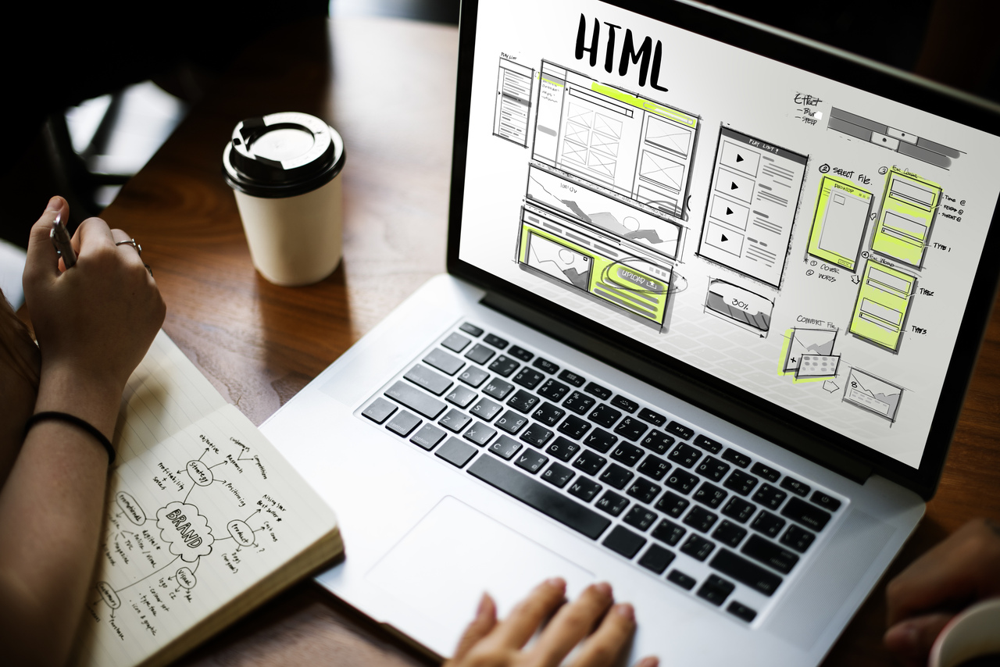
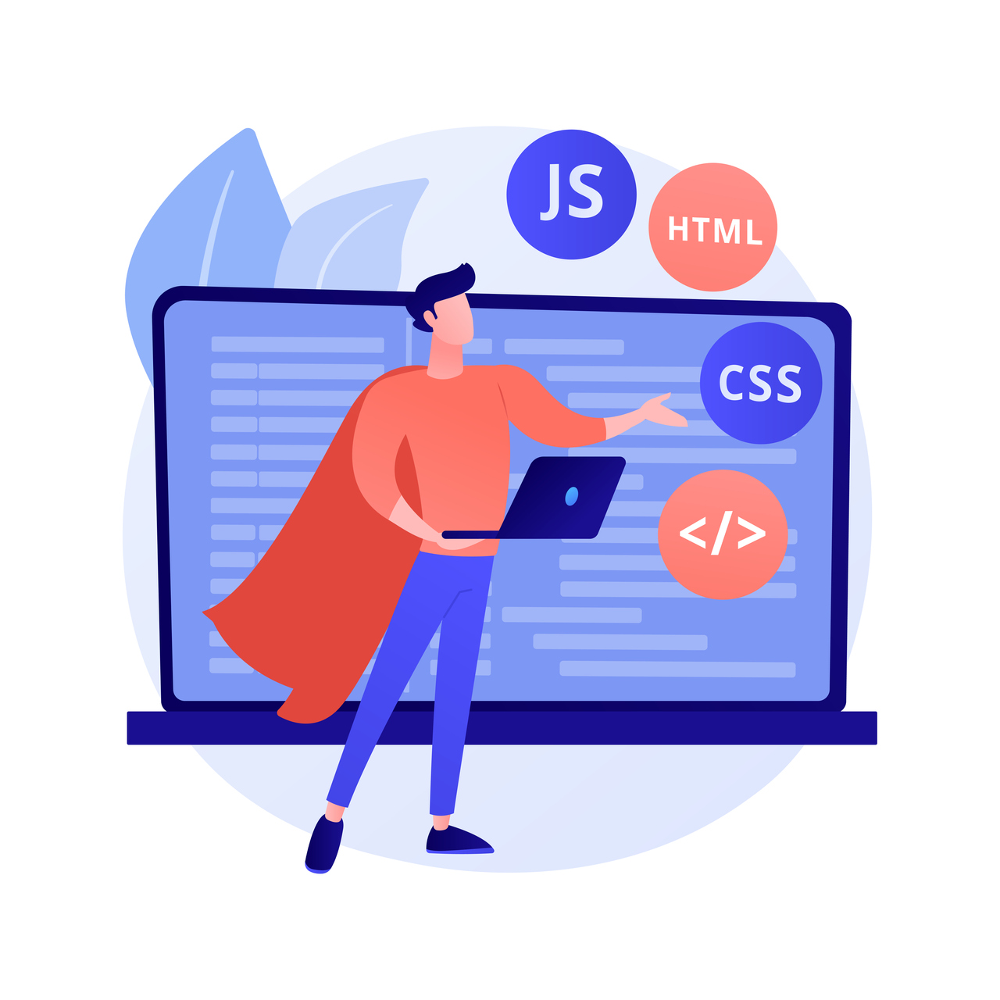

Programador front-end
Eu procuro por novas experiências no mercado de trabalho de tecnologia. Eu estou em constante evolução em desenvolvimento.


Habilidades
-
HTML
Intermediário (landing pages, blogs). -
CSS
intermediário (layouts responsivos, flexbox, grid). -
JS
Básico (Interatividades, validação de formulários).